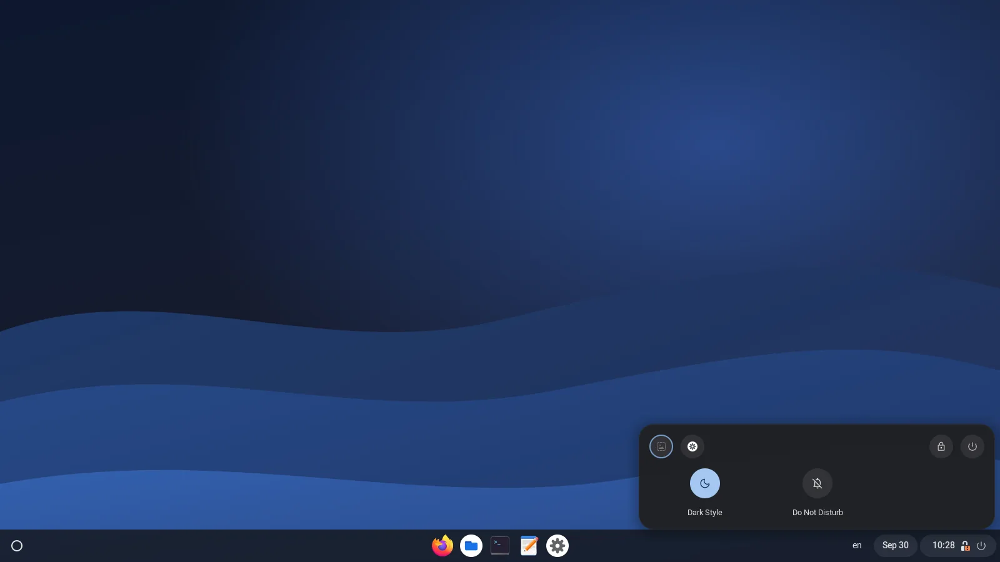
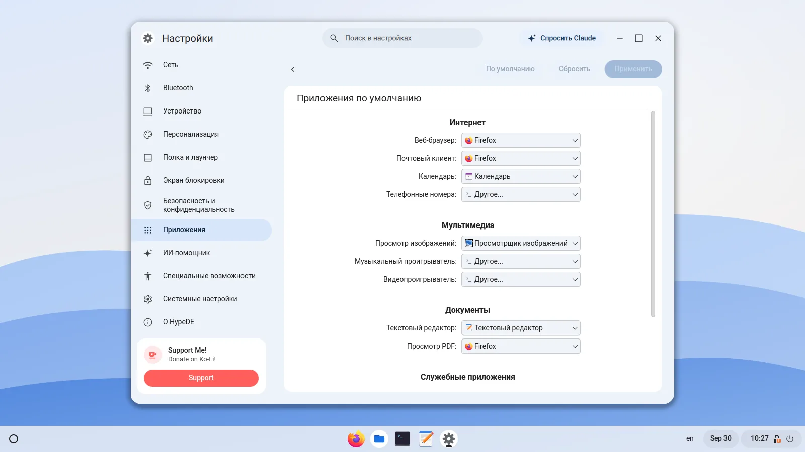
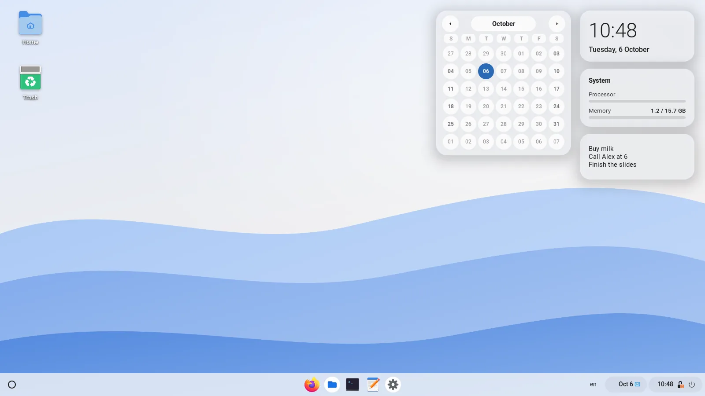
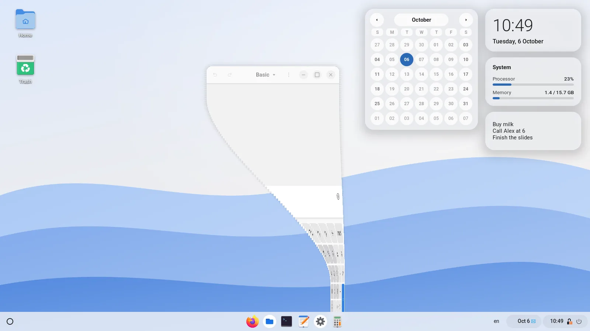
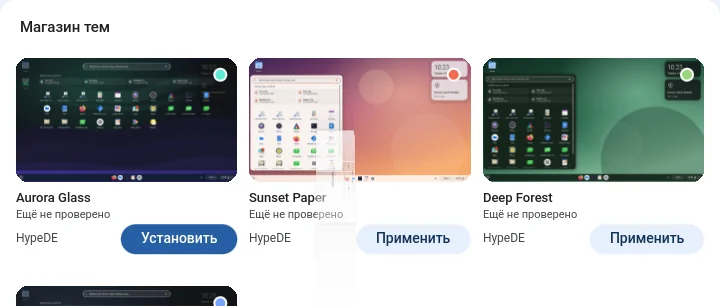
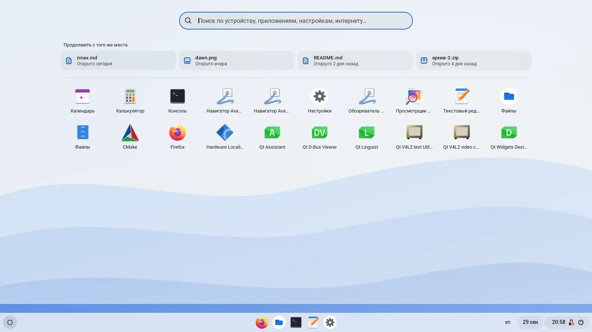
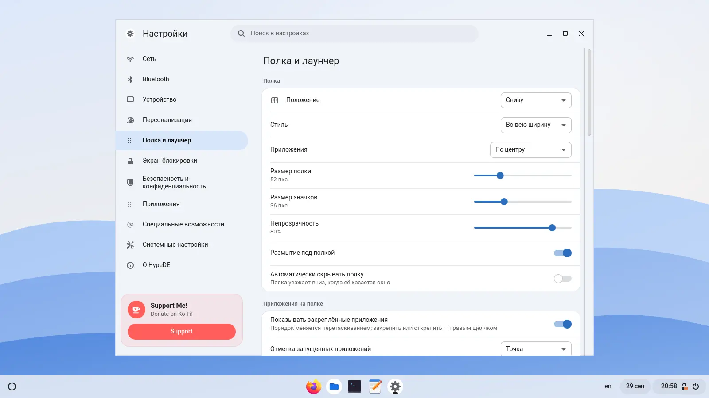
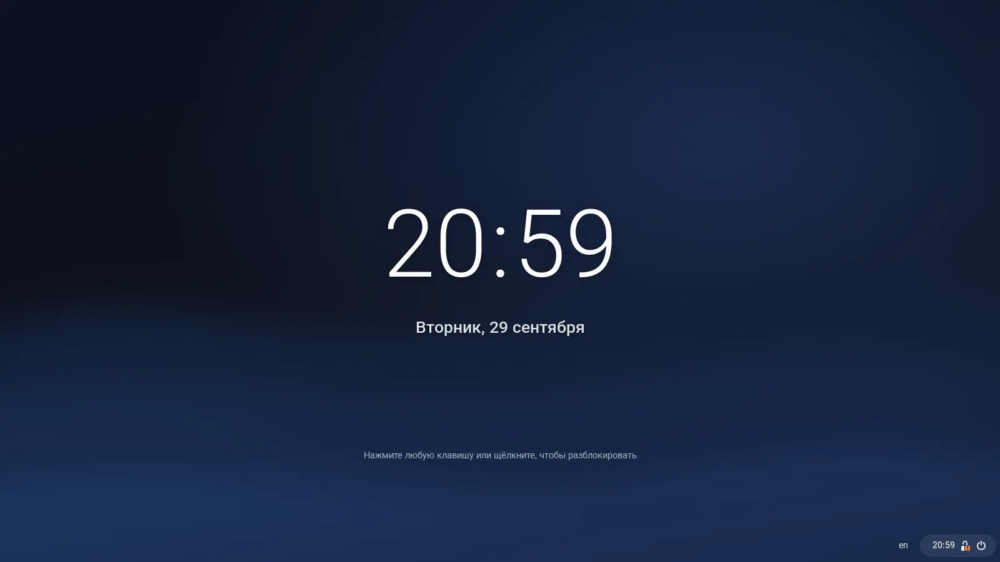

Команды в лаунчере
Наберите тёмная, громкость 40, таймер 5, кофе 30,
заблокировать или очистить корзину и нажмите Enter. Понимает и английский.
Полка, лаунчер-«пузырь» и трей со статусом — на нетронутом GNOME Shell. «Настройки» из настоящих модулей KDE, свой файловый менеджер, виджеты на рабочем столе, режимы фокуса и магазин тем на GitHub.
$ git clone https://github.com/hypede/hypede && cd hypede/packaging && makepkg -si

HypeDE — отдельный сеанс рядом с обычным GNOME. На экране входа появляется пункт «HypeDE», а в самом GNOME ничего не патчится и не заменяется.
12*(3+4) и ищет в интернете.


Ничего не нужно настраивать. Полный список команд и сочетаний клавиш — в вики.
Наберите тёмная, громкость 40, таймер 5, кофе 30,
заблокировать или очистить корзину и нажмите Enter. Понимает и английский.
«Работа», «Игра» и «Учёба» включают «Не беспокоить», режим питания, тему и нужные приложения. Выключили режим — всё вернулось как было.
После перезагрузки HypeDE предложит открыть окна на тех же рабочих столах и на тех же местах. Super+Shift+T возвращает только что закрытое окно.
Часы, календарь, погода, нагрузка системы, играющая песня и заметка. Перетаскиваются куда угодно, правая кнопка — добавить или убрать.
Открываются с лёгкой пружиной, сворачиваются в значок на полке «джинном» и чуть пружинят, пока их тащишь. Оба эффекта отключаются.
Четыре пальца вверх — лаунчер, вниз — рабочий стол. Движение идёт за пальцами и отменяется, если передумали. Три пальца остались за GNOME.
Claude, Gemini, Mistral, ChatGPT, Grok или DeepSeek — вход своим аккаунтом. Только переписывается и видит только то, что вы ему отправили. Выключен, пока не включите.
Файлы из папки «Рабочий стол» перетаскиваются в приложения. Анимированные обои или своё видео и GIF, которые замирают под развёрнутыми окнами.


Тема задаёт цвета, обои, полку, лаунчер, окна, экран блокировки, шрифты и значки.
Текущий вид можно сохранить как тему, переслать файлом или поставить тему из магазина
в «Настройках». Чтобы опубликовать свою, положите theme.json в открытый
репозиторий на GitHub и вставьте ссылку в «Настройки»: бот проверит тему и добавит её.

У каждой части среды есть настройка в «Настройках» HypeDE, а свои настройки HypeDE хранит отдельно от обычного GNOME: эксперименты здесь никогда не меняют GNOME.



При блокировке экран заливают волны цвета акцента и открывают размытые обои и часы. Нажмите клавишу — часы уйдут вверх, поле пароля выпрыгнет, а по бокам раскроются карточки с зарядом и загрузкой системы. При разблокировке всё «сворачивается».


Режим сеанса GNOME Shell и юниты gnome-session запускают оболочку как
gnome-shell --mode=hypede. Значения по умолчанию лежат в секциях
:HypeDE и не трогают обычный сеанс GNOME.
«Настройки» загружают модули через KCModuleLoader — ту же функцию, что и
kcmshell6, поэтому внутрь страницы встают и QML-модули, и старые на виджетах.
Сеанс работает с отдельной базой настроек dconf — ~/.config/dconf/hypede.
Раскладки и специальные возможности переносятся из GNOME при первом входе; расширения GNOME
сюда не попадают, пока вы их не разрешите, а необязательные службы GNOME запускаются только
по вашему выбору.
Модули KDE для KWin и PowerDevil под GNOME ничего бы не меняли, поэтому эти разделы работают через GSettings. Расположение мониторов пока открывается в настройках GNOME.
shell/modes/hypede.json верхняя панель → полка, расширения
shell/extension/… полка, лаунчер, обзор, уведомления
session/ сеанс для экрана входа, юниты gnome-session
apps/settings/ «Настройки»: C++/QML, KCMUtils, GSettings, D-Bus
apps/files/ «Файлы»: Python, GTK 4, libadwaitaНужен GNOME Shell 48–50. Число заданий сборки подбирается по свободной памяти; задать
вручную: JOBS=2 makepkg -si.
git clone https://github.com/hypede/hypede
cd hypede/packaging
makepkg -siВсе по желанию. Без модуля его строка в «Настройках» подскажет нужный пакет.
sudo pacman -S plasma-nm bluedevil plasma-pa print-manager plasma-workspace \
plasma-desktop kde-cli-tools flatpak-kcm kinfocenter power-profiles-daemonСеанс появится в GDM, SDDM и других экранах входа, которые читают
/usr/share/wayland-sessions.
Другие дистрибутивы: make && sudo make install, зависимости — в
README.
Нужна только полка в обычном GNOME? make install-user.